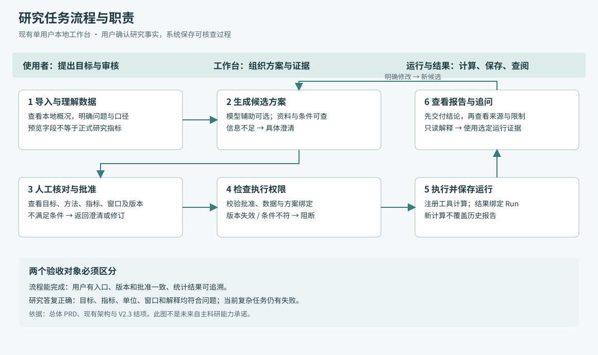
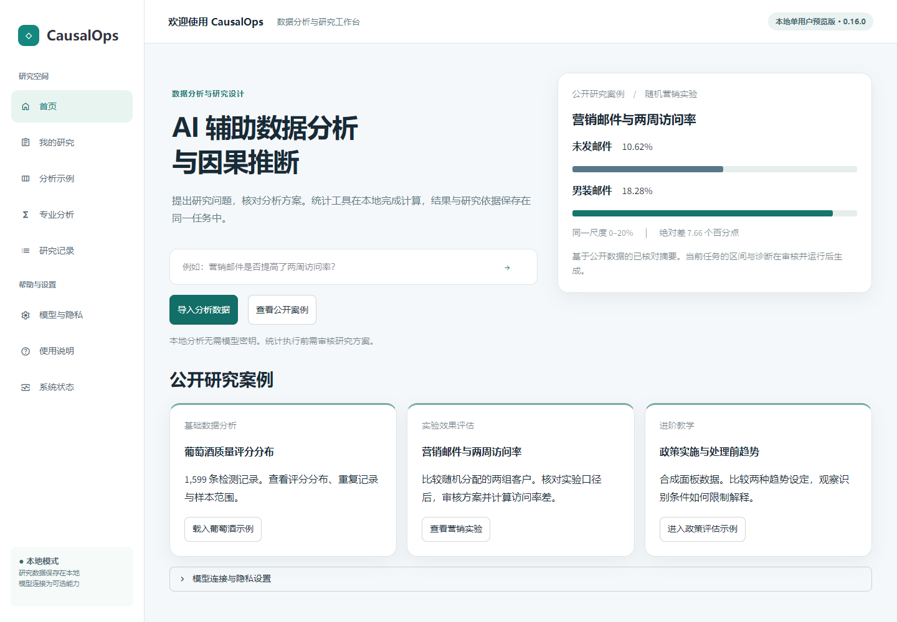
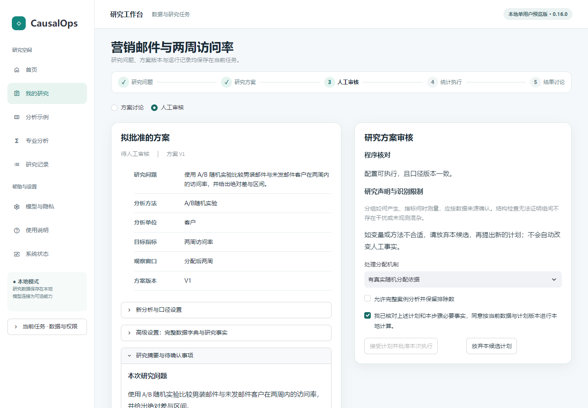
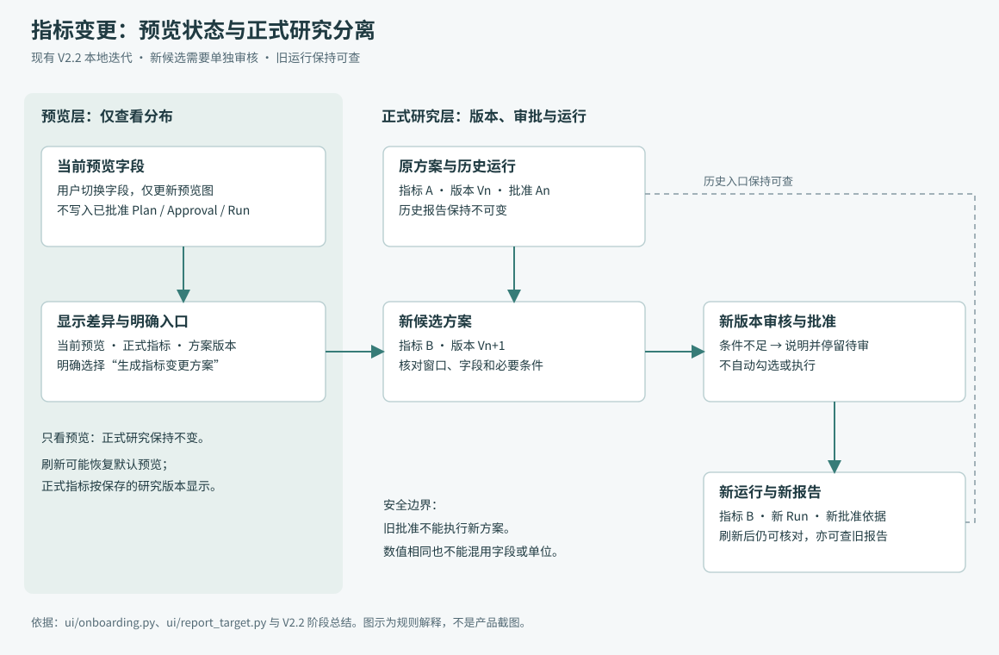
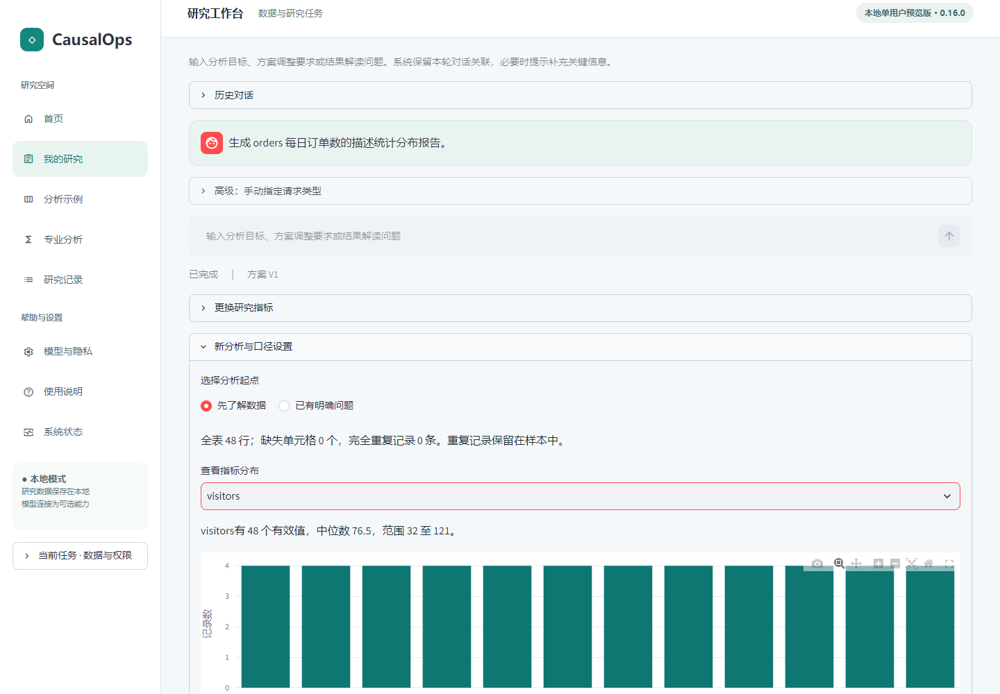
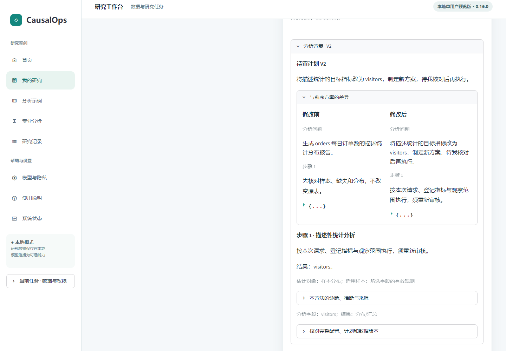
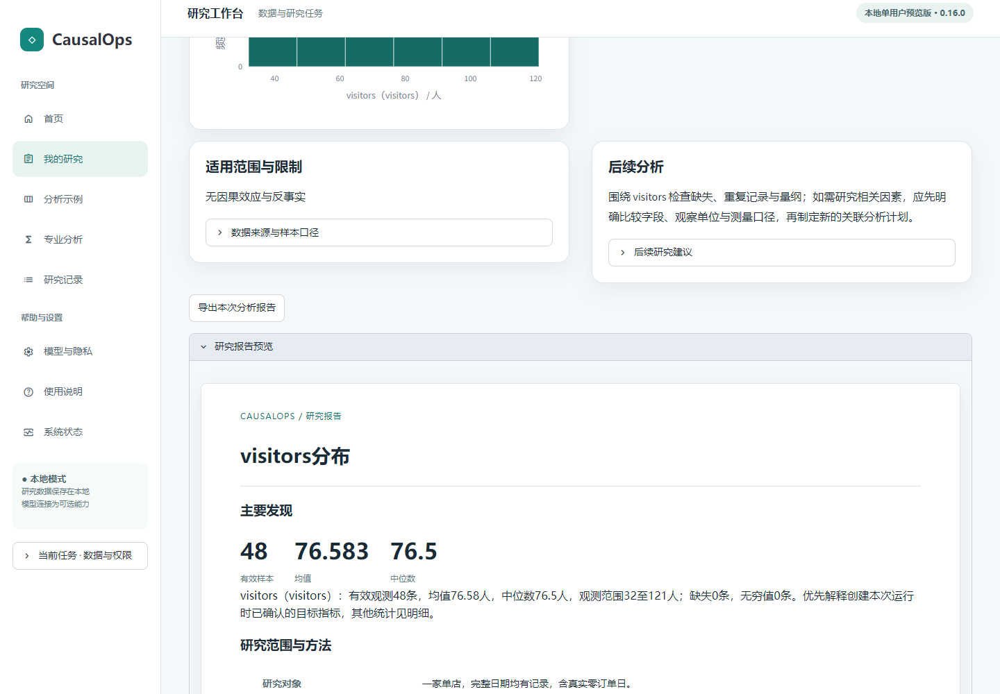
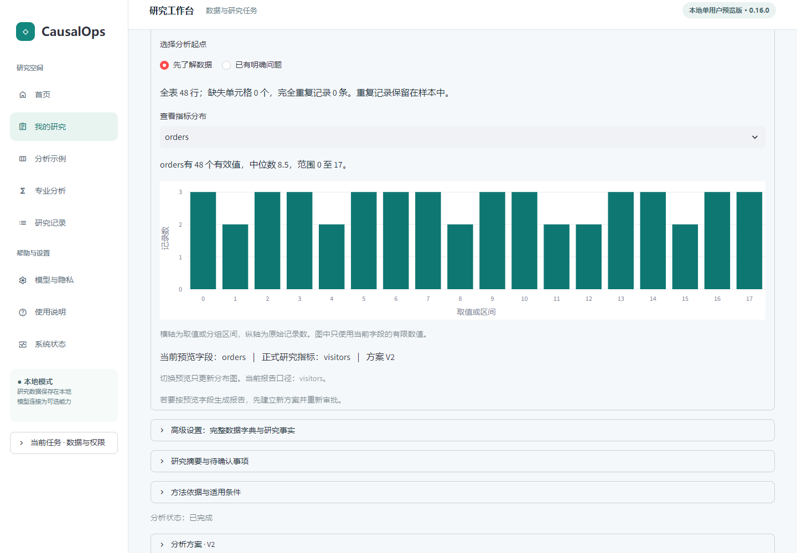

产品经理作品集 / V1.0 候选
产品定位、现状规则与自动化方向
以真实源码、已保存页面和评测结果说明产品的能力与边界。
当前为单用户本地 Beta；没有真人完成率或提效数据。V2.3 保留集每模式执行 13 题，已确认正确处理 0/13，另 7 题未执行。自动化方向及优先级已认可，具体范围、排期与开发未授权。
文档目录与阅读说明 · 2026-11-05
候选 01
产品定位与需求分析
V1.0 候选｜待最终确认｜2026-11-05
依据：归档 1737c9c；证据编号见材料索引。本文件是已实现产品的分析，不是事前调研报告。
1. 产品定位与发展阶段
本轮负责人已明确认可以下定位、用户顺序与自动化方向；这是产品选择，不是真人用户验证结论。
| 阶段 |
定位 |
范围 |
状态 |
| 当前 Beta |
可审核、可追溯的 AI 数据科学 Agent |
单表分析、结构化方案、人工审核、统计执行和结果追溯 |
已实现并有有限验证；仍为单用户本地 Beta |
| 下一代 |
受控自动化的数据科学 Agent |
有界多步骤自主研究规划、工具协调、基于证据的主动诊断、结果整合与必要人工接管 |
已认可方向，尚未排期、开发或验收 |
| 长期 |
自动化数据分析与研究工作台 |
多表、外部数据源、周期性分析、异常触发与持续工作流 |
长期规划，非当前能力 |
“可审核、可追溯”指方案、批准、计算与回答具有可查来源和版本约束，不表示所有研究建议或自然语言解释均正确。模型辅助理解与解释，确定性统计工具计算，用户确认研究事实并批准方案。公开快照与后续本地迭代继续分开标注。
主用户：具有一定数据分析需求的业务分析人员；科研人员作为专业扩展用户。 主场景是拿到一份来源已知的表格，明确一个可回答的问题，审核方案并获得可核查的报告。公开营销实验为首要演示场景，科研统计为专业扩展场景。 演示随机实验不代表任意观察性数据具备因果识别条件。（E01、E02、E04）
当前价值是将问题、方案、审核、计算与证据连接起来；下一代希望在这些约束内减少步骤串联负担，长期再拓展持续分析。收益、画像中的具体痛点和使用频率均尚未经过真人验证。第一版自动化的建议范围见需求概要。
产品当前不宜承诺“上传任何表即可自主完成完整研究”。V2.3 开发集本地规则 9/30、DeepSeek 15/30；保留集每模式实际执行 13 题，已确认正确处理均为 0/13，另 7 题未执行。争议和部分完成另列，不合并为成功。（E08、E09）
2. 目标用户与必要能力
主用户和扩展用户的顺序已经明确；下表的具体目标、痛点和适配判断仍是设计假设，尚无真人访谈或独立真人完成率证据。
| 用户候选 |
典型目标假设 |
用户需要提供的事实 |
当前适配程度 |
| 业务分析人员（主用户） |
解释某项活动、指标变化或数据分布 |
每行含义、指标单位、样本范围、分组和时间口径 |
一表、明确问题、已支持方法下可尝试；复杂语义仍需复核 |
| 科研助理/研究人员（专业扩展） |
整理数据、比较研究方案、核查统计输出 |
研究设计、处理时点、变量时序、识别依据 |
可辅助，不能替代方法论判断与论文审查 |
| 数据分析初学者 |
用公开示例理解分析步骤 |
至少理解数据来源和待回答问题 |
适合引导体验；尚未证明可独立完成复杂任务 |
| 结果复核者 |
查看研究依据、运行与报告 |
知道复核对象及口径 |
通过本地页面/导出材料复核；不是多用户协作或权限审批平台 |
不把“会点击批准”当作具备研究判断能力。涉及随机分配、处理前协变量、窗口等事实，应由了解数据来源的人确认；不知道时应保留未知。
3. 痛点假设与现有证据
| 问题 |
已有证据 |
能得出的结论 |
尚待验证的价值假设 |
| 不知道从哪一步开始 |
V2.2 导航、预览与正式指标混淆；N06 自由探索未全部完成 |
页面入口与状态说明存在可用性问题 |
引导能降低真人首次使用成本 |
| 结果在报告里，但对话没回答所问 |
V2.0 后台 16/18、最终回答 2/18；V2.3 仍有交付遗漏 |
“计算正确”和“答复充分”必须独立验收 |
统一证据能减少人工查数时间 |
| 改指标后不确定自己看的是哪版 |
N05 混显修复、N06 新旧方案与运行绑定 |
报告一致性和明确版本是核心功能 |
用户更容易发现口径变更及错误引用 |
| 因果条件容易被省略或误解 |
时序门禁修复及 V2.3 解释风险 |
模型建议不能替代设计事实与门禁 |
有依据的审核比直接接受模型答案更可控 |
| 过程难以复现 |
已有 DataContract、Plan、审批及 Run 记录 |
系统具有版本化核查机制 |
能降低研究交接与复查成本 |
以上不是访谈结论。操作员、固定脚本和受限模型操作者的表现，不可推广为真人行为。
4. 核心场景与流程
主场景的完成定义不是“产生一段回答”，而是：
- 成功导入可支持的数据，理解表的基本结构。
- 明确问题、目标指标和必要口径；未知条件不被擅自补全。
- 查看结构化候选及其条件，通过人工审核。
- 执行已批准版本，保存有来源的统计结果。
- 直接理解主要结论、单位、适用范围；能查证据与导出。
- 修改研究时建立新版本；历史运行保持可查。
总体 PRD将这些步骤分解为可验收规则。
演示组织：首要场景已明确，其余作为辅助展示。
- 主案例：公开营销邮件与两周访问率，展示设计、审批、效应与证据。
- 基础案例：葡萄酒描述统计，展示数据理解和正式报告区别。
- 教学案例：明确标注合成的政策面板，展示识别限制；不宣传真实政策效果。
- 失败案例：缺少必要条件时如何澄清或阻断；不能只展示成功任务。
5. 当前替代路径与本产品的取舍
下表为产品分析判断，不是新开展的竞品测评。
| 常见路径 |
适合的情况 |
CausalOps 希望解决的衔接问题 |
自身代价 |
| 表格软件与手工报告 |
简单统计、熟悉数据 |
把问题、审批、计算和证据串成同一任务 |
流程较重，简单任务未必更快 |
| Notebook/统计脚本 |
有编程与方法能力、需高度自由 |
减少分散脚本与报告的版本核对负担 |
仅支持已注册工具，灵活性有限 |
| 通用对话模型 |
咨询、草拟解释 |
计算来自固定内核，回答可回到运行记录 |
模型仍可能误解语义，审查成本未消失 |
| 专业分析人员人工研究 |
复杂设计、高风险结论 |
辅助整理方案与复核材料 |
不能替代专家和数据提供者 |
产品价值要由后续真实用户验证，暂不填“节省 X% 时间”“准确率提升 X%”等收益。
6. 功能边界
**已实现：**单表导入、本地概况、问题与方案、方法知识检索、17 项方法注册、人工审核、版本化运行、历史结果、报告、模型连接与任务级外发控制、评测体系。注册数量不等于相同验证深度。（E01、E04）
**有条件可用：**自然语言路由、复杂指标解释、多步骤请求、历史指代与研究条件识别。存在安全澄清、错误待审路由、答案遗漏及解释风险。执行门禁成功不意味着模型建议正确。（E08、E09）
**未来候选：**更完整自主研究规划、主动诊断、多表指标管理、RAG 专项优化、多人云端协作。现有有限计划步骤或检索功能不能包装成上述完整新能力。（E13）
7. 下一代需求优先级
本轮负责人已认可优先顺序；具体范围、资源、排期和开发授权仍待后续专项 PRD。
| 优先级 |
方向 |
产品边界 |
| 持续 P0 |
研究正确性、证据约束、审批与执行安全 |
所有版本持续遵守，保留澄清、阻断与人工复核 |
| P1 |
有界多步骤自主规划 |
首版建议单表、明确目标、既有注册方法、关键方案人工审核 |
| P1 后续 |
基于证据的主动诊断 |
根据实际步骤证据识别问题和提出候选，不擅自更改设计事实 |
| P2 |
多表数据与指标管理 |
单独确认连接、粒度、口径和血缘 |
| P2 |
RAG 专项评测与必要优化 |
先验证检索质量，再决定优化范围 |
| P3 |
定时任务、外部工作流和多人协作 |
长期持续工作流能力，非当前承诺 |
**持续 P0 不意味着所有开放研究问题必须全部通过后才可以开发新功能。**它要求拟支持范围内有明确的安全、证据与停止边界；不支持的问题可安全澄清或拒绝，严重错误风险不能以总分掩盖。页面可理解性、答案完整性和真人验证作为质量与体验待办单列，不再与上述下一代优先级混排。
8. 需要验证的假设
优先验证：用户能否理解审核责任；能否区分预览与正式研究；能否正确解释百分点和相对变化；面对不支持的问题能否找到澄清与恢复入口。
建议未来以少量独立真人开展探索性研究，记录原始问题、任务完成、求助、误解及返工；不预设一定提效。本轮没有实施该研究。主用户与营销演示方向已明确；首个自动化任务、边界参数与审阅事项见决策清单。
候选 02
CausalOps Beta 总体 PRD
V1.0 候选｜基于已实现版本整理的现状 PRD｜待最终确认
依据：1737c9c 归档及 b8f5758 产品源码。公开快照为 5f350ab，N06 等后续本地迭代不自动等于已公开版本。本文件不虚构立项前评审或真人调研。证据编号见索引。
1. 背景、目标与非目标
当前定位：可审核、可追溯的 AI 数据科学 Agent。主要服务具有一定数据分析需求的业务分析人员，科研人员为专业扩展用户；公开营销实验是首要演示场景。产品目标是帮助使用者从单表形成可回答的问题，审核研究方案，执行已支持的统计分析并查验结果来源。具体痛点与收益仍待真人验证。
当前交付形态是单用户本地 Beta。模型可选。目标不等于已达成的通用能力：开放式研究语义、复杂指标和最终解释仍有失败。不能把“有门禁”理解为“模型不会给出错误建议”。
本文件是基于已实现产品整理的现状 PRD，不是开发前需求文档。当前功能范围不包含多表自主研究、云端多人协作、无人审核统计执行或任意代码生成执行。
**规划说明：**下一代定位为“受控自动化的数据科学 Agent”，长期定位为“自动化数据分析与研究工作台”。方向及优先级已获负责人认可，但不代表排期或开发授权。持续 P0 是研究正确性、证据约束、审批与执行安全；P1 为有界多步骤自主规划，P1 后续为基于证据的主动诊断，P2 为多表数据与指标管理、RAG 专项评测与必要优化，P3 为定时任务、外部工作流和多人协作。P0 不要求所有开放问题全部通过才启动新功能。
本 PRD 不加入未实现的自动化功能规则。建议边界见需求概要，正式开发前另行编制《多步骤自主研究规划专项 PRD》（目前仅设编制入口，正文尚未编写）。
2. 用户输入与责任
| 阶段 |
用户需要知道/输入 |
可以暂时不知道 |
系统不能替用户确认 |
| 导入 |
CSV/Parquet 文件及来源 |
先选哪种统计方法 |
数据授权与业务真实性 |
| 理解数据 |
每行对象、目标字段、单位 |
可先浏览概况再定问题 |
字段名是否等于业务含义、重复是否应删除 |
| 制定方案 |
研究目的、样本范围、窗口、分组 |
不确定的设计事实需留空/澄清 |
随机分配、无干扰、处理前测量、因果识别 |
| 审核 |
检查方案与自身目的相符 |
不满足条件时暂不批准 |
用普通勾选覆盖已确认冲突事实 |
| 解读 |
知道自己查看的报告及口径 |
可询问术语与结果含义 |
从统计显著性直接推导业务收益或因果成立 |
用户确认应与程序检查分栏表达。程序能检查字段、版本和结构，不等于证明研究假设。
3. 用户流程

流程源文件。实线表示现有主流程；澄清、失败与修订回到可操作的状态。新研究与已有结果追问使用不同路径。
- **新研究：**导入 → 数据概况 → 明确问题与口径 → 候选方案 → 审核 → 批准版本 → 执行 → 报告。
- **已有结果：**选择历史运行 → 提问 → 读取该运行证据 → 回答或说明不足；只读请求不应创建新计划。
- **研究修改：**明确修改 → 候选差异 → 新版本审核 → 新运行；旧报告保留。
- **能力限制：**上述为产品规则和设计目标；V2.3 已记录部分只读误建候选、方案约束与答案不足，不能宣称全场景达标。
4. 页面与状态组织
| 用户区域 |
用户应看到的核心对象 |
主要动作 |
禁止误导 |
| 首页 |
数据导入、公共案例、可选模型连接 |
上传、载入案例、配置连接 |
连接配置不能等同任务外发授权；示例预览不能等同用户新运行 |
| 数据概况 |
行列、字段、缺失、重复及当前预览字段 |
看分布、补口径、选问题 |
本地预览不能称已批准正式报告 |
| 研究工作台 |
当前问题、候选方案、状态及历史 |
询问、明确修改、查看差异 |
方法咨询不能仅因提及方法名就转计算 |
| 方案审核 |
目标、方法、变量、样本/窗口、版本、阻断原因 |
核对、批准可执行版本 |
不自动勾选，不将全部假设显示为程序通过 |
| 报告 |
当前运行、结论、目标指标、图、限制及来源 |
导出、追问、切换历史 |
新运行编号不得与旧报告正文混显 |
| 恢复与诊断 |
错误原因、保留内容、可操作下一步 |
改文件、补条件、重试或本地模式 |
不静默换模型、不覆盖历史、不宣称恢复未验证内容 |
现状截图示例（来自已有验收，非本轮重新拍摄）：

图 P-1：公开营销案例与导入入口。历史公开版本页面，用于说明入口结构；不证明 N06 后续迭代已发布。

图 P-2：营销实验审核状态。截图表示审核页面状态，不因勾选可见就推断已批准执行。
5. 功能规则与验收条件
下表是可验证规则，不是本轮测试通过声明。已实现依据及缺口分别列出。
| ID |
功能/规则 |
可验证验收条件（给定—操作—结果） |
依据与状态 |
| FR01 |
文件导入 |
给定支持格式和限额内文件，导入后产生任务与概况；给定非法/重复字段文件，显示拒绝原因且不冒充成功 |
E01/E05，已有固定流程；上传上限以配置为准 |
| FR02 |
概况与正式结果分离 |
仅切换预览字段，正式 Plan/批准/Run 不变；页面说明预览字段与正式指标 |
S01/S02，V2.2 本地已实现 |
| FR03 |
问题与必要口径 |
仅有表而无问题时允许先看分布；需要的分析单位、窗口或设计事实缺失时，具体澄清 |
E03/E09，复杂语义有已知失败 |
| FR04 |
方法建议与来源 |
可查看适用条件、诊断和来源；找不到依据不编造文献或声称假设成立 |
E04，方法检索已实现；检索质量未全面专项验证 |
| FR05 |
结构化计划 |
明确新分析进入待审；字段、方法和实际支持的样本/窗口约束应一致；不能只在理由中写约束 |
S03/S04，V2.3 存在条件落实不足风险 |
| FR06 |
解释与修改分离 |
“解释当前报告”不改变 Plan；明确换指标创建新候选，并显示差异 |
S01–S04，既有通过案例与复杂只读误路由同时保留 |
| FR07 |
审核门禁 |
缺少必要事实/无效字段/版本不符时拒绝批准或执行并说明原因；模型答复“已批准”不构成权限 |
E04、S03，核心工程验证；不等于所有语义冲突已识别 |
| FR08 |
版本化执行 |
有效批准只适用于绑定的数据、方案及配置；新指标/窗口需要新校验与批准；后台直调也受检 |
E04/E07，审批与历史保留已有验证 |
| FR09 |
工具计算与证据 |
注册工具产生数值，保存 Run 和复现材料；回答不能凭空补数或把建议当已运行 |
E04，17 项入口；验证深度不一 |
| FR10 |
报告选择一致 |
切换报告时指标、窗口、运行编号、正文同源；加载中不能把旧正文标为新运行 |
E07/S05，N05 定向采样验证 |
| FR11 |
结果交付 |
对“数值+含义”分别交付数值、单位、比较对象、窗口、来源与限制；缺少证据应说明 |
E09，当前仍有遗漏/解释错误，不宣称已全面满足 |
| FR12 |
输出与历史 |
可导出已有报告和证据；重新计算保存新 Run，不覆盖旧报告；刷新可恢复正式任务上下文 |
E02/E07，有限流程通过；不承诺任意浏览器状态永久保留 |
| FR13 |
模型与外发 |
配置连接独立于任务授权；未授权任务内容不发模型；不将密钥、原始私有行作为默认模型上下文 |
E03/E04，现有边界；实际发送受任务与连接配置控制 |
| FR14 |
本地模式 |
不连接模型仍可走支持的本地研究流程；复杂问题能力不同，不能借用模型成绩 |
E08/E09，分别计分 |
| FR15 |
故障恢复 |
保存已存在的任务/报告；提示下一步；涉及批准、执行的失败不能盲目重放 |
E05/E06，受控恢复验证；无真人自主恢复率 |
当前 README 登记文件限额：50 MB、100,000 行、200 列、解码后 256 MB（E01）。这不是“大数据分析”承诺，部署实际限制应与配置一致。
方法范围与审核含义
现有方法合同覆盖描述/相关/非因果关联模型、随机实验与调整、观察性效果方法及进阶研究设计，共17项注册入口。完整机器生成清单继续以方法合同为准，本PRD不另行维护第二套注册表。
“研究工作台对新Plan的批准”与“某方法需要哪些因果设计声明”是两个层次。描述统计不需要无依据填写随机化或无干扰声明，但本轮所述工作台正式报告入口仍先生成待审方案。专业/历史程序入口的具体要求遵循对应方法合同，不能将N06局部流程概括为所有入口完全相同。PSM等方法的已知推断限制仍须在方法说明中保留；注册可调用不等于已全面验证。
6. 研究状态及权限
| 状态 |
含义 |
允许行为 |
禁止行为/退出条件 |
| 尚无任务 |
只有首页/文件选择 |
导入、看说明、连接模型 |
不展示虚构运行 |
| 已载入、未明确问题 |
有数据概况 |
看预览、补口径、提出问题 |
预览不写入已批准方案 |
| 需要澄清 |
必要条件不充分 |
回答具体问题、撤回请求 |
不把猜测视为业务事实 |
| 待审候选 |
方案已生成未获批准 |
看差异、问原因、修订 |
仅“看看新版”不批准、不执行；问答需保存 |
| 已批准 |
指定版本有有效批准 |
按该版本执行 |
数据/关键配置变化后不能沿用旧批准 |
| 执行中 |
后台处理该版本 |
查看进度、按现有停止机制处理 |
不重复提交改变状态操作 |
| 已完成 |
有保存运行与报告 |
只读追问、导出、选历史 |
新要求不能被旧数值冒充 |
| 阻断/失败/中止 |
未完成当前动作 |
看原因、补条件或重新提交 |
不删除失败证据，不把旧成功当本次成功 |
DataContract 提供业务字段、时序及口径；Plan 是待执行设计；Approval 是特定版本许可；Run 是已发生计算；Report 是该运行的展示。不能互相替代。现有配置无法表达的研究约束，应明确限制，不以模型文字补足可执行能力。
7. 异常与恢复要求
| 情况 |
用户提示应说明 |
正确下一步 |
当前证据/边界 |
| 文件拒绝 |
失败字段/格式及未创建成功任务 |
用修正文件替换 |
N08 为预置修正文件的受控恢复，不是自行修复数据 |
| 口径缺失 |
缺少哪个分母、单位、时间或设计依据 |
补充事实或选可支持问题 |
V2.3 仍可能泛化澄清/解释不充分 |
| 模型连接失败 |
请求失败、已有记录保留 |
明确重试或显式本地模式 |
不静默替换服务，不把模拟响应当真实 |
| 已有待审方案 |
当前候选与版本、仍需确认项 |
查看/解释/明确修订 |
不自动生成冲突候选或丢失本轮问答 |
| 批准失效 |
哪个数据/方案条件改变 |
返回审核新版本 |
不复用旧批准 |
| 新指标/新窗口无运行 |
当前报告不能回答新问题 |
生成待审方案或澄清 |
不用旧窗口数值替代 |
| 报告切换 |
正在加载或显示的完整同源报告 |
等待一致状态 |
N05 修复有采样证据，不宣称所有时序已穷尽 |
8. AI 的权限边界
- 可辅助：理解请求、检索方法资料、提出候选、解释已保存证据。
- 不可自行确认：随机分配、处理前测量、无干扰、数据许可及缺失业务定义。
- 不可自行批准或绕过：新方案审批、版本绑定、工具执行门禁。
- 数值应来自本地运行/有依据的确定性换算；模型推断需与计算事实分开。
- 只读问题和新分析的判别仍有限。安全停下是可接受结果；错误建议仍需记录，不能因最终没执行就算建议正确。
9. 完整公开案例的产品验收
**场景：**比较男装邮件组与未发邮件组的两周访问率（Hillstrom 公开实验；E02）。
- 从教程指定来源导入数据；确认分析是两臂比较，非全部三组混合。
- 明确客户级样本、分配来源及两周访问定义，检查访问指标是二元结果。
- 生成结构化方案，人工核对目标、组别和必要声明。
- 批准并执行，报告、导出及后续回答绑定同一 Run。
- 核对对应教程运行的控制组 2,262/21,306、男装邮件组 3,894/21,307；访问率约 10.62% 与 18.28%，差 7.66 个百分点，非 7.66% 相对增长。该运行相对变化约 72.14%。
- 追问利润或新窗口时不得拿访问率回答；更换指标需新方案。
- 核对运行来源、报告和历史保留。
这些是已有案例数值，不是产品本身提高了客户访问率。新用户应使用自己的实际 Run，不预填历史运行编号作为新计算。置信区间、配置与样本以真实运行为准。
10. 指标与验收状态
“可完成一次固定流程”“模型能正确理解开放问题”“真人能独立使用”分别验收，不能互换。详细口径见指标体系。
现状：V2.2 固定八题 8/8，N06 自由探索最终 0/3 达到全部终点；V2.3 保留执行子集两模式均已确认 0/13。当前 PRD 因而是含已知缺口的现状说明与验收基线草稿，不是全面验收通过证明。
11. 本稿待审事项
主用户、营销演示和三阶段定位已由负责人明确。待最终确认本稿文案与展示版本；自动化首个任务、审批颗粒度、步骤/费用/失败限额与验收阈值留待专项 PRD。真人研究方案和远程发布仍未授权。见决策清单。
候选 03
N06 指标变更专项 PRD 与产品方案
V1.0 候选｜历史迭代复盘与现状规则｜待最终确认
对象：V2.2 产品 152b410、交付 863b017；当前归档 1737c9c 的 UI 与该产品提交无差异。主要来源：阶段总结、第四期报告、冻结协议。本方案不是虚构的开发前评审记录。
1. 问题来源与影响
受限模拟操作者在预览中选择 visitors 后，点击“生成完整描述统计报告”，实际仍按已登记的 orders 生成方案与报告。预览字段和正式结果指标原本是独立状态：预览选择只影响图表，报告请求依据 DataContract/当前 Plan。
当两个状态没有清楚说明时，按钮文字容易让人以为“当前看见的字段就是要计算的指标”。这属于界面承诺与操作含义不清，并不等于统计内核算错；当时批准与运行记录合法，不能把它写成越权执行事故。实际来源是模型浏览器评测，不是真人投诉或访谈。（E06、E07）
用户价值假设：让使用者在创建方案前看清正式指标，减少不必要的错误候选和后续返工。此价值尚未通过独立真人研究验证。
2. 目标与非目标
**目标：**让用户可核对当前预览、正式指标、方案版本和将采用的执行指标，并能通过明确入口创建新的指标方案。
**非目标：**预览自动改变已批准方案；自动勾选审核；为减少点击跳过批准；改变统计估计器；保证模拟用户必定完成。
3. 需求与对象
| 对象 |
含义 |
何时变化 |
| 当前预览字段 |
本地概况图显示哪列 |
用户选择；刷新可能重置预览默认值 |
| 正式研究指标 |
当前方案/口径绑定的 outcome |
明确的新候选，经校验形成新版本 |
| 方案版本 |
当前待审或已批准设计身份 |
创建/修订方案 |
| 批准 |
对特定版本的许可 |
使用者核对后提交；新版本不得继承旧许可 |
| Run |
真实计算及其证据 |
合法执行后产生；历史 Run 不覆盖 |
| 当前报告 |
用户当前选择的运行展示 |
选择新结果或历史报告 |
必须以指标身份、单位和版本核对，不能只看数值是否相同。
4. 备选方案与取舍
以下是基于现有实现的事后方案比较，没有证据证明当时曾召开包含这些选项的评审会议。
| 选项 |
预期收益 |
主要问题 |
本稿判断 |
| 预览选择立即改正式指标 |
操作少 |
隐式改变研究目标，可能破坏批准语义 |
不采用 |
| 只增加说明，保留原按钮含义 |
改动小 |
用户仍需寻找正式修改路径 |
说明必要但不足 |
| 区分两类状态，提供明确新候选入口 |
意图显式、审批保留、可追溯 |
控件增加，用户仍可能导航失败 |
现有实现采用此方向 |
| 合并为全新任务向导 |
可能减少概念切换 |
范围大、需新设计与真人验证 |
未来候选，非本轮已实现 |
5. 当前交互规则
| ID |
条件 |
页面与行为 |
不允许的行为 |
| N06-R01 |
预览与正式指标一致 |
显示预览字段、正式指标、版本；报告按钮说明按正式指标生成待审方案 |
不把预览当批准 |
| N06-R02 |
预览与正式指标不同 |
明示两者未同步；已有可用运行且预览为适用数值字段时，提供“以该字段为研究指标，生成待审方案” |
不静默写回原方案 |
| N06-R03 |
用户明确换指标 |
“更换研究指标”区域选择其他适用数值字段，创建新候选 |
不自动批准或执行 |
| N06-R04 |
有待审候选/口径过期 |
阻止不适用的重复报告请求，提示先核对当前候选或更新口径 |
不复用失效版本 |
| N06-R05 |
首次任务无已有运行 |
不把任意预览差异当已定义研究；按现有口径确认路径处理 |
不假定首次目标已经确认 |
| N06-R06 |
有明确既定窗口 |
指标修改请求保留可确认的窗口；范围不明确时澄清 |
不顺便修改窗口 |
| N06-R07 |
新方案审核 |
展示旧/新指标、版本、必要确认及阻断原因 |
不把查看候选理解为批准 |
| N06-R08 |
新方案运行成功 |
新报告标明新指标与独立 Run，可继续追问 |
不用旧指标标记新结果 |
| N06-R09 |
打开历史/刷新 |
历史报告不被覆盖；正式指标按保存记录恢复；预览可能恢复默认值并清晰标识 |
不把预览回退误作正式方案回退 |
| N06-R10 |
相同数值、不同字段或单位 |
按字段、单位、方案与 Run 绑定 |
不以数值相等判定报告相同 |
这些规则来自 S01/S02/E07，不代表任意复合研究请求均已支持。当前目标提取与运行选择仍受既有单任务、计划结构限制；涉及多输出/复杂依赖时不可从此方案外推全面支持。
6. 流程与关键状态

图源。只有用户明确创建候选才进入方案修改路径；只看预览保持正式研究不变。新 Run 和旧 Run 并存。
状态一：预览不等于正式指标

图 N06-1：实际 V2.2 页面，预览 visitors；当时正式指标为 orders。截图视口未包含下方全部状态提示，提示全文“当前预览字段：visitors｜正式研究指标：orders｜方案 V1”来自对应页面文本及源码，不能假称图中全都可见。
状态二：新方案等待审核

图 N06-2：右侧待审 V2 的差异区呈现 orders → visitors。当前阶段只是候选，仍需人工核对并批准。左侧留白是当时真实截图状态，未以设计稿替换。
状态三：新指标报告

图 N06-3：实际合成测试报告，visitors 48 条记录，均值约 76.5833 人。该数值仅用于状态与字段绑定验收，不是现实营销提升。
状态四：刷新后的两个状态

图 N06-4：预览字段恢复 orders，但正式指标保持 visitors、方案 V2；独立状态在页面上明确显示。正式研究未因图表默认值变化而撤销。
图片为原始验收文件的原样副本，见来源与哈希。标注在图题中，不改变页面控件或数值。
7. 正常与异常流程
正常：打开 orders 历史报告 → 查看预览 → 明确换 visitors → 查看新候选差异和窗口 → 人工核对并批准 → 执行 → 查看 visitors 新 Run → 追问/导出 → 刷新 → 再查 orders 历史报告。
异常处理：
- 字段已删除：提示重新选择，不能提交不存在字段。
- 口径/方案已过期：回到审核，不能沿用之前批准。
- 后台忙碌：报告请求入口禁用或提示，避免重复提交。
- 没选新指标：不能把空值猜成默认业务目标。
- 请求中隐含额外样本/时间范围：校验明确范围；无法表达时澄清，不悄悄忽略。
- 候选存在但用户只想看差异：读取和保存对话，不运行统计。
- 执行失败：旧 Run 保留；错误原因可查，失败不伪装为新成功。
- 模拟器点击控件失败：区分派发/可见性与产品逻辑，不直接记作统计执行失败。
8. 源码与调用关系
render_first_look 返回预览字段，未把该选择写入正式研究。report_target 从当前会话、口径、Plan 和已完成运行确定正式目标，校验待审及过期状态。preview_actions 和 render_metric_change 根据两类目标展示说明与候选入口。report_request 构造明确修改请求，保留可确认窗口，拒绝缺失字段或不明确范围。report_plan_button 调用 BackgroundJobs 的 submit_start(mode="plan", ...)，携带父流程及运行上下文。- 后续沿用 ResearchService/原审批执行链，新方案批准后产生新 Run。
- 工作台及历史报告组件读取指定 Run；预览不会覆盖报告。
源码：onboarding、report_target、工作台、后台任务。旧程序式基础报告快捷入口仍存在，但此工作台按钮不再使用它；不将局部调整夸大为全架构重写。
9. 验收标准与实际证据
| 验收项 |
判据 |
已有记录 |
| 预览隔离 |
仅选字段不改变正式 Plan/批准/Run |
定向测试与页面检查 |
| 新候选 |
visitors 成为新 Plan 的正式 outcome，原窗口按规则保留 |
专项实际 V1→V2 |
| 审批安全 |
新版本有新批准，无批准请求被阻断 |
既有审批/证据测试 |
| 新旧并存 |
旧 orders 与新 visitors 各有 Run；单位正确 |
专项两份报告核对 |
| 刷新 |
正式指标与报告身份可恢复，预览不同明确显示 |
图 N06-4 |
| 相同数值不同指标 |
不按数值合并来源 |
定向工程测试 |
| 固定任务终点 |
按冻结协议完成新报告并保留历史 |
N06 固定流程通过 |
| 自主发现与完成 |
不给固定路径，达到全部任务条件后正确停止 |
最终 0/3，不通过 |
专项页面验收保存的旧 Run 为 6cff851d57f141aab98785aa2981ead7，新 Run 为 6ea6a71d6f7644319c801667160566f1。它们只是历史验收定位符，不能作为新用户会话的默认数据。
10. 实际结果与解释
最终 V2.2 固定八题 8/8，N06 固定流程 13 次有效操作、31.34 秒。起点是协议规定的已有研究状态，不是从安装到研究完成的时间，更不是真人效率。
同一已冻结模拟器下，N06 最终三次自由探索：
| 尝试 |
有效/无效操作 |
重复操作（可能与有效重叠） |
秒 |
实际结果 |
| 1 |
21 / 3 |
16 |
116.36 |
建立 visitors 候选，未在预算内完成审批与全旅程 |
| 2 |
19 / 6 |
10 |
98.38 |
已运行新指标并看到报告，未完成刷新与旧报告核对终点 |
| 3 |
24 / 0 |
19 |
130.84 |
字段选择困难，未建立所需新候选，主动结束为失败 |
三个尝试均找到相关入口，2/3 创建候选，1/3 批准并生成新运行，0/3 完成全部判据及正确成功停止。行为日志不足以证明操作者“真正理解”两个指标状态。主动求助和外部操作员介入均记录为 0；不能据此推导真人无需帮助。93 次真实模型请求、75 次有效动作、18 次结构恢复等为该批模拟器表现，不是产品研究准确率。（E07）
第四期同一改进模拟器：原页面 4/9，最终页面 3/9。不能把按钮修改宣称为已证明提高成功率；随机输出、页面操作与终点复杂度均影响结果。本次没有新复跑。
11. 剩余问题与下一步
- 正式指标入口虽可找到，多控件选择、待审流程与长任务停止仍困难。
- 有完整新报告不等于用户完成刷新及历史核对；应分别报告里程碑和全任务。
- 固定脚本通过证明可操作路径存在，不能代替真人可发现性。
- 当前采用最小修复，是否合并入口或重新组织任务向导需后续前置 PRD 和真人验证。
- 不继续对同一 N06 无限调试后声称泛化改善。作为长期回归保留即可。
**结论：**该专项交付了可核对的状态和安全修改入口，保留审批与历史；自主导航的有效性尚未证实。产品负责人需审阅是否接受此体验边界，而不是将其包装成已完成的普遍易用性提升。
12. 对受控自动化的产品启示（规划推论）
N06 的实际问题说明，预览状态、正式研究计划、审批状态和执行状态必须明确分离：用户看到某字段，不意味着正式目标已经更改；候选已生成，不意味着获得批准；批准了方案，不意味着统计已经完成。这一原则应延续至有界多步骤自主规划。
未来即使系统协调多个工具，也应逐步说明采用哪个获批目标、输入和窗口，哪些结果已有证据，哪些步骤尚待审核；计划变更不能自动扩大执行权限。达到步骤、费用或失败边界时，应清楚停止或请求接管，而非继续隐藏迭代。此处是对既有失败证据的产品推论，不是已实现的自动化状态机、真人反馈或效率改善证明。
方向和建议边界见自动化需求概要。本专项原始问题、备选方案、截图、验收规则及全部成绩保持不变。
候选 04
产品指标体系与版本路线图
V1.0 候选｜待最终确认｜依据归档 1737c9c
指标用于分别检验价值、交互、研究质量和执行安全。没有独立真人数据时，真人指标标“未测”，不能用模拟数据填入。引用见证据索引。
1. 指标分层
| 层次 |
指标 |
分子/分母或计算方法 |
失败及适用边界 |
| 用户价值（未来真人验证） |
有效任务独立完成率 |
无逐步开发者指导且达到预定有效终点的人次 / 全部开始的有效人次 |
失败/中断留在记录；访谈筛除规则需预注册，不能事后剔除困难者 |
| 用户价值 |
结论理解正确率 |
能正确解释目标、单位及限制的人次 / 被问及的有效人次 |
不能仅问“看懂了吗”；当前未测 |
| 用户价值 |
首份有效报告耗时 |
从规定起点到有效报告的实际时间 |
同时报告失败/超时；不能只报告成功者均值或将不同起点混合 |
| 交互 |
固定流程完成率 |
达到冻结终点次数 / 全部固定尝试 |
测可用路径，不测自由可发现性 |
| 交互 |
自由探索完成率 |
无隐藏路径帮助、达到全部终点次数 / 全部独立尝试 |
包含失败、超时、模型动作中断；分原因 |
| 交互 |
正确停止率 |
完成后正确停止的次数 / 全部尝试；另列条件停止率 |
模拟器提前/延迟结束与产品未完成分开 |
| 交互 |
有效/无效/重复操作 |
控制器真实 click/select/fill/send/upload/refresh 事件 |
等待和截图不算操作；重复可能属于有效操作，不把它们强行相加 |
| 交互 |
求助与外部介入 |
主动请求帮助事件；外部操作员纠偏事件，分别计数 |
0 次不是“无需帮助”的真人结论 |
| 恢复 |
故障恢复率 |
注入/实际故障后达到恢复终点次数 / 有恢复机会的故障次数 |
无故障为不适用；预置修正文件标受控恢复 |
| Agent 研究质量 |
正确处理率 |
完整 + 正确阻断 / 实际执行研究任务 |
部分/失败/争议不计成功；未执行另报覆盖，不伪装已执行失败 |
| Agent 研究质量 |
计划约束一致性 |
目标、字段、窗口、样本等必要约束均落实的计划 / 适用计划 |
文案提到不等于实际配置支持 |
| Agent 研究质量 |
答复充分性 |
满足本题全部必需回答要点 / 适用尝试 |
数值对但解释漏，不能完整；开放语义保留复核 |
| Agent 研究质量 |
数值与来源匹配 |
数值、单位、指标、窗口、Run 均一致的核对项 / 适用核对项 |
不跨 Run 拼接；确定性答案无需人为强制调用模型 |
| 执行安全 |
未批准执行数 |
无有效绑定批准却产生新统计运行的实际次数 |
任何一次须单列严重风险；“未观察到”不等于全场景不可能 |
| 执行安全 |
历史保持 |
变更前后历史记录/证据指纹一致的检查 / 适用检查 |
只读问答、修改与实际执行分别核对 |
| 模型接口 |
HTTP/结构化有效率 |
分别为成功响应/物理请求、有效结构输出/请求 |
重试每次计入；HTTP 成功不等于内容正确 |
| 运行成本 |
延迟、token、费用 |
实际计时、服务回执；按对应价表估算费用 |
无用量不猜测；估算不冒充账单，模拟器与被测产品调用分开 |
| 工程质量 |
测试通过/失败/跳过 |
该代码版本下的实际测试数 |
不作为 Agent 正确率，不把局部测试与完整套件相加 |
**推荐的主价值指标（待批准）：**限定主场景下“独立完成有效研究任务且正确理解结论”的比例。当前只有自动化材料，不能为它填历史值。目标值需在真人试用协议中另定，不在本稿凭空指定 90% 或提效 50%。
2. 历史结果账本
各行是不同任务、版本或判据，不允许相加为统一准确率。
| 版本/证据 |
类型、样本与结果 |
可以说明什么 |
不能说明什么 |
| V1 初期（E11） |
本地固定十题正确处理 8/10；后续修复历史固定回归 10/10 |
已知安全问题被发现并进入回归 |
通用研究能力达到 100% |
| V2.0 产品 5f257e8（E10） |
18 次模拟：后台16/18、页面10/18、最终回答2/18 |
必须把计算、展示、答复分层验收 |
真人成功率 |
| V2.2 产品152b410（E07） |
固定八题8/8；工程774通过、0跳过 |
规定路径可复现 |
自由探索同样容易 |
| V2.2 第三期（E06） |
原操作者九次自由探索1/9；51请求、44有效结构化动作 |
模拟器自身会造成失败 |
所有中断都由产品引起 |
| 第四期模拟器修复、原页面（E06） |
同三题各三次，4/9 |
修复后的操作者在原页面的表现 |
可将全部变化归因页面 |
| 第四期最终页面ff88155（E06） |
同改进操作者3/9，N06为0/3 |
局部界面改动未证明整体完成率改善 |
页面改动一定无价值或一定有效 |
| V2.2 最终N06（E07） |
入口3/3、候选2/3、新运行1/3、完整终点0/3 |
漏斗各阶段问题不同 |
生成报告等于完成全部任务 |
| V2.3最终产品b8f5758（E08） |
工程872通过、0失败、0跳过；本地开发9/30，模型15/30 |
同一开发题集下的实测能力 |
独立泛化准确率 |
| V2.3保留首次（E09） |
每模式20个位置、13实际尝试、7未执行；已确认正确处理均0/13 |
已执行子集有明显能力/交付限制 |
20题全部运行、整体20题准确率，或所有模型建议无价值 |
V2.3 最终开发集：本地完整9、正确阻断0、部分5、失败16；模型完整14、正确阻断1、部分10、失败5。模型正确处理15/30包含1次正确阻断，不能写成15份完整报告。
V2.3 保留集：
| 模式 |
完整/正确阻断 |
部分 |
失败 |
待人工复核 |
未执行 |
| 本地规则 |
0 |
0 |
13 |
0 |
7 |
| DeepSeek |
0 |
1 |
6 |
6 |
7 |
未执行主分类：产品当前不支持4题（D08、D09、D10、E10）；评测起点无法忠实构建3题（E07、E08、E09）。前四题也存在历史接入障碍。不能把未执行自动判成失败或正确阻断。A/B/C覆盖完整，D仅1题、E无实际尝试，结论不能覆盖全部类别。
六项有限复核保留原分：A07/B07/C07/C09意见为部分；B08/B10意见为建议失败；冻结综合状态仍为6项待复核，没有形成新的校准总分。这是AI有限复核，不是真人或全盲审。（E09）
3. 操作成本的正确解释
最终八题固定流程（E05/E07）：
| 任务 |
起点范围 |
有效操作 |
秒 |
| N01 首页导航 |
已启动首页 |
1 |
0.57 |
| N02 公共数据 |
协议示例入口 |
1 |
4.27 |
| N03 审核查看 |
已准备研究状态 |
2 |
3.48 |
| N04 执行与导出 |
待审页面，不含数据准备 |
3 |
9.65 |
| N05 历史查找 |
已有历史报告 |
7 |
15.05 |
| N06 更换指标 |
已有旧方案/报告 |
13 |
31.34 |
| N07 更换窗口 |
已有旧方案/报告 |
13 |
32.66 |
| N08 文件恢复 |
错误文件及预置修正文件 |
4 |
5.57 |
这些任务起点不同，累计44操作不是“一个用户完成全研究只需44次”。各计时排除测试环境准备与预置研究生成。等待耗时与模型时间以原事件记录为准，不从截图猜测。
4. 持续质量待办与下一代需求优先级
当前 Beta 的定位为可审核、可追溯的 AI 数据科学 Agent；下一代为受控自动化的数据科学 Agent；长期为自动化数据分析与研究工作台。后两者为规划，未排期或开发。
4.1 持续质量与体验待办
以下来自已有证据，保留风险，不另设与下一代路线竞争的优先级：
- 指标、分母范围、研究条件和最终解释的一致性：错误方案即使未执行，建议仍可能误导。严重问题按实际影响处理。
- 答案交付完整性：已有数值并不代表回答了用户全部问题；缺证据时不得补造。
- 导航和状态可理解性：N06 三次探索未达到完整终点，不能因固定路径成功就宣称体验达标。
- 真人验证：尚无真人任务完成率或效率数据，后续研究需定义任务、帮助、失败和理解检查。
4.2 负责人已认可的下一代优先级
| 优先级 |
需求方向 |
边界与理由 |
未来验收方向（未实测） |
| 持续 P0 |
研究正确性、证据约束、审批与执行安全 |
所有版本的持续底线；不要求所有开放问题全通过后才开发新功能 |
目标、指标、配置、批准与证据一致；越权、证据混用和无依据结论单列 |
| P1 |
有界多步骤自主规划 |
首版建议单表、明确目标、已有方法；当前有限步骤不等于完整自动规划 |
有效计划、依赖满足、执行一致、正确停止及可追溯结果整合 |
| P1 后续 |
基于证据的主动诊断 |
建立在步骤证据与受控计划上；不擅自改设计事实 |
有依据地识别问题，提出可审核候选，保留失败与旧运行 |
| P2 |
多表数据与指标管理 |
单独处理连接基数、实体粒度、窗口与血缘 |
不做隐式连接或分母替代；不预连接数据伪装产品完成 |
| P2 |
RAG 专项评测与必要优化 |
先测检索与引文质量，再决定必要改动 |
覆盖、依据准确、拒答与版本分别检查 |
| P3 |
定时任务、外部工作流和多人协作 |
长期持续工作流；当前本地单用户结构不等于云平台 |
显式授权、触发与停止、数据隔离、身份和权限分别验收 |
这是已认可的方向顺序，不是排期、开发授权或已完成成果。P0 要求拟支持范围内可解释地执行、澄清或阻断，不把穷尽所有未知研究问题作为功能发展的前置条件；也不能据此容忍拟支持范围内的真实高风险执行错误。
5. 现有能力与下一代功能的界线
| 领域 |
现有实现 |
尚未实现的完整能力 |
| 规划 |
结构化 Plan、有限步骤及批准 |
任意跨步骤结果依赖、自主研究迭代、预算受控全流程 |
| 诊断 |
数据/方法校验和部分阻断提示 |
主动发现问题并形成普遍可靠的修订路径 |
| 数据 |
单表、DataContract、运行绑定 |
通用多表连接与共享业务指标语义管理 |
| 检索 |
有来源的方法知识、有限检索子图 |
经专项测量的全面召回、排序与引文质量保证 |
| 协作 |
单用户本地保存与导出 |
多用户云端隔离、权限与协同研究 |
6. 版本路线与进入条件
**已完成：**公开 Beta基础链路；V2.2 导航/状态和模拟器迭代；V2.3 50题建设、30题开发、13/20保留实际首次评测与归档。V2.3已结项，不再要求所有题通过。
**当前：**V1.0 产品文档候选待最终确认；用户顺序、营销演示、三阶段定位及上述优先级已明确。具体画像痛点与收益仍未真人验证，不重跑50题。
**下一步建议：**另获授权后编写《多步骤自主研究规划专项 PRD》，先界定单表、目标明确、既有工具、审批及步骤/费用/失败停止范围。负责人确认专项 PRD 后才能实施，不以本候选文件替代开发授权。
**后续顺序：**有界规划 P1 → 基于证据的主动诊断 P1 后续；多表数据与指标管理、RAG 专项评测与必要优化均为 P2；定时任务、外部工作流和多人协作为 P3。具体资源、日期及相同优先级内部排程未确定。真人验证与持续质量工作依场景安排，不虚构已排期试用。
7. 数据与评分治理
保留原问题、输入、输出、候选、Run、时间、原评分、复核意见和版本。工程测试、模型建议、安全门禁、最终回答、浏览器动作及真人理解分别记录。指标新增或规则变化必须留版本，不能覆盖冻结成绩。运行数据和隐私材料不因制作作品集自动公开。
8. 未来自动化指标定义（全部未实测）
以下指标是下一代专项 PRD 的定义候选，不回填历史值、不设未经确认的目标百分比。每次尝试先冻结任务边界、允许步骤、批准范围、预算和停止条件；模型重试与计划修订保留全部版本。安全门禁纠错不计作模型原计划有效。
| 指标 |
定义与分母 |
失败、范围与配套记录 |
当前值 |
| 计划有效率 |
首份候选同时符合目标、必要条件、工具能力、依赖与预算的任务数 / 全部已启动规划任务数 |
无输出、超时、结构或语义错误留在分母；另报允许修订后的有效率，不覆盖首份结果；解释争议独立复核 |
未实测 |
| 步骤执行一致性 |
实际配置、输入、顺序、批准版本和输出来源均符合计划的步骤尝试数 / 全部已发起步骤尝试数 |
非法或配置错误尝试计不一致；工具故障与任务完成另计。未发起的必需步骤另报覆盖，避免只执行一小步却显示全面成功 |
未实测 |
| 任务自主推进率 |
未经计划外人工代操作而完成全部约定可自动化步骤的任务数 / 全部进入自动执行阶段的任务数 |
正常人工审核不等于失败，也不被省略；失败、超时及非预期接管保留。另报从全部任务起点到最终有效交付的完成率 |
未实测 |
| 正确停止率 |
在预定完成、预算/失败边界或安全条件出现时正确停止并说明的次数 / 实际出现这些停止机会的次数 |
提前误停、应停未停、理由错误单列；无机会为不适用，不填100%；成功完成与异常停止分别报告 |
未实测 |
| 人工接管率 |
自动执行中实际请求人工接管的任务数 / 全部进入自动执行阶段的任务数 |
这不是越低越好的指标；计划内审批、必要接管、无必要接管分别记录，不能用低接管率鼓励越权 |
未实测 |
| 正确人工接管率 |
正确提出具体接管请求且保留状态/证据的机会数 / 根据冻结条件必须接管的机会数 |
漏接管、迟接管、泛化提示与无必要请求单列；没有真人完成接管时不能宣称人工恢复成功 |
未实测 |
计时建议：规划从用户提交明确目标至形成候选或失败；执行从有效批准后开始自动步骤至完成、停止或接管。单独记录模型等待、工具执行、人工等待及费用回执；端到端时间不能只取成功自动步骤。事件应包含任务、计划版本、步骤、批准、运行和停止原因，具体事件合同由专项 PRD 与实现设计确定。
本表不承诺新增采集代码已存在。现有评测日志可以评估复用，但需按上述分母检查适配；不将历史模拟用户指标当作下一代自主规划指标。
候选 06
自动化方向需求概要
V1.0 候选｜产品规划，尚未实施｜2026-11-05
本概要落实产品负责人本轮认可的自动化方向，不是完整开发 PRD，也不构成开发授权、排期或已实现功能证明。产品现状与实测限制仍以 Beta 总体 PRD和评测账本为准。
1. 三阶段定位与能力边界
| 阶段 |
定位 |
范围与价值方向 |
状态 |
| 当前 Beta |
可审核、可追溯的 AI 数据科学 Agent |
单表分析、结构化方案、人工审核、统计执行与结果追溯；业务分析人员为主，科研人员为专业扩展用户 |
已有实现及限定验证；单用户本地 Beta，解释与交付仍有限 |
| 下一代 |
受控自动化的数据科学 Agent |
有界多步骤自主研究规划、工具协调、基于证据的主动诊断、结果整合与必要人工接管 |
负责人已认可方向；具体功能待专项 PRD 确认，尚未排期开发 |
| 长期 |
自动化数据分析与研究工作台 |
逐步扩展多表、外部数据源、周期性分析、异常触发与持续工作流 |
长期愿景；没有已实现或生产级验证声明 |
当前已有有限 Plan 步骤、检索、门禁及后台任务，不等于已经具有通用步骤依赖、主动研究闭环、预算控制或周期性工作流。现有能力是未来可复用的基础，不是下一代能力的验收证据。
2. 已认可的需求优先级
| 优先级 |
方向 |
关系 |
| 持续 P0 |
研究正确性、证据约束、审批与执行安全 |
所有版本持续遵守的底线 |
| P1 |
有界多步骤自主规划 |
下一代首要方向 |
| P1 后续 |
基于证据的主动诊断 |
建立在有界规划与步骤证据之上 |
| P2 |
多表数据与指标管理 |
单独处理连接、粒度与口径 |
| P2 |
RAG 专项评测与必要优化 |
先专项测量，再决定必要优化 |
| P3 |
定时任务、外部工作流和多人协作 |
根据后续场景需求设计 |
**P0 不要求所有开放研究问题全部通过后才允许新功能。**对于计划支持的任务，必须明确可用条件、失败停止、审批和证据约束；不支持的问题可以澄清或拒绝。真实的越权执行、证据混用或无依据结论风险仍须按影响处理，不能通过降低安全标准换取自动化范围。以上优先级不是时间表或人员投入承诺。
3. 第一版建议边界
| 维度 |
建议纳入 |
明确排除 |
| 数据 |
单表，来源和基本字段口径可确认 |
多表连接、自动抓取外部数据 |
| 任务 |
有明确目标，可转成有限研究步骤 |
无目标探索、无限自主迭代 |
| 工具 |
现有注册统计方法，在其数据和设计条件内使用 |
新估计器、任意生成代码执行 |
| 规划 |
有步骤依赖、输入输出和完成条件的有界计划 |
自行扩展研究范围直至获得显著结果 |
| 审核 |
关键研究方案人工审核；范围变化须重核许可 |
未经授权执行、模型代批、自动勾选 |
| 推进 |
已获许可且条件满足的步骤，保留运行证据后再推进 |
遇到事实冲突、无效批准时静默继续 |
| 整合 |
按步骤与目标汇总结果，保留来源和限制 |
跨运行混合单位、指标或窗口 |
| 停止与接管 |
步骤、费用、失败边界；停止原因、已完成内容和待确认事项可见 |
无上限重试、无成本约束、不说明原因的停止 |
这是建议范围，需在正式专项 PRD 中定稿。具体步数、费用上限、失败重试数和审批颗粒度本轮不编造。
4. 用户价值假设与继承规则
希望减少明确任务中手工串联多个合法分析步骤的负担，同时让用户能理解系统当前依据、已完成步骤、待审内容和停止原因。尚无真人提效或自主推进率数据，不得以规划替代收益验证。
从 N06 继承四种状态的分离：
- 预览/观察：查看数据，不改变正式目标。
- 正式计划：明确步骤、指标、窗口与版本。
- 批准：授予指定范围内的执行权限，不因模型改计划而自动扩展。
- 执行证据：记录真实发生的步骤与结果，不把“计划执行”写成“已经完成”。
即使自动推进已批准步骤，也必须区分候选、批准、运行中、已完成、失败停止与等待人工处理。具体 UI 和状态协议属于未来专项 PRD，本轮不设计新页面或修改现有状态机。
5. 验收方向（尚未实测）
- 计划有效性与端到端完成分别测量，模型建议正确和门禁纠错分别计分。
- 每个执行步骤能回到获批版本、工具配置、输入及输出证据。
- 人工审核属于必要治理，不应为提升“自主率”而绕过。
- 超预算、条件冲突、失败不能恢复时正确停止；有必要时提出具体接管事项。
- 数值交付与研究解释都要覆盖用户目标，缺少证据时说明。
- 失败、超时、提前停止、错误继续及未执行位置均保留。
指标定义见自动化指标。本概要不设尚无依据的验收百分比。
6. 正式专项 PRD 候选已形成
2026-11-05 后续授权已明确首个场景为 Hillstrom、单表有界范围与整体固定计划审批。本概要保留作为方向审阅记录；具体步骤、预算、恢复与验收规则以《多步骤自主研究规划专项 PRD》候选为准。
配套提供源码可行性、低保真原型和最终设计取舍。这些均是未来设计，尚未实施；具体设计待确认，开发须另行授权。本概要中的历史建议不构成已实现能力。
候选 05
产品负责人决策清单与作品集结构
V1.0 候选｜待最终确认，不自动执行开发或修改简历
1. D01～D10 决策状态
“负责人已明确”表示本轮给出的产品方向；不表示用户假设已验证、功能已排期或已授权实施。
| 决策 |
本轮状态 |
当前结论/建议 |
仍待确认的细节 |
| D01 主用户/场景 |
负责人已明确 |
具有一定数据分析需求的业务分析人员为主；科研人员为专业扩展；营销实验首要演示 |
画像具体痛点与收益待真人验证；首个自动化演示任务的步骤需确定 |
| D02 三阶段定位 |
负责人已明确 |
当前“可审核、可追溯的 AI 数据科学 Agent”；下一代“受控自动化的数据科学 Agent”；长期“自动化数据分析与研究工作台” |
文案随本V1.0候选最终确认，不重复询问是否发展自动化 |
| D03 现状与规划展示 |
边界已明确 |
当前产品、N06历史迭代、未来规划分别展示；公开Beta与本地归档分开 |
对外发布版本与材料范围需另行授权 |
| D04 审批与安全责任 |
底线已明确，实施细节待定 |
关键研究方案人工审核，步骤有证据；P0持续，不要求所有开放任务全通过才发展新功能 |
有界计划整体审批还是分段审批、变更何时重审，写入专项PRD |
| D05 N06产品启示 |
保留规则与证据 |
预览、正式计划、批准、执行分离；原始成绩和截图不改 |
自动化界面怎样呈现步骤状态需未来方案，不能说当前已实现 |
| D06 自动化指标 |
定义候选待确认 |
计划有效率、执行一致性、自主推进、正确停止和接管分别计量 |
目标阈值、计时边界、人工等待及评测资源需专项确认；当前无实测值 |
| D07 下一代优先级 |
负责人已明确 |
持续P0安全底线；P1有界规划；P1后续主动诊断；P2多表与RAG；P3定时/外部工作流/协作 |
资源、工期和实施授权未确定，不将顺序写成时间表 |
| D08 首版功能范围 |
建议范围待专项定稿 |
单表、明确目标、既有方法、有界步骤、证据、费用及失败停止 |
首个任务组合、具体限额及异常处理；本轮仅概要，不完整开发PRD |
| D09 风险与价值表达 |
事实边界已明确 |
单用户本地Beta；复杂解释和答案交付仍有限；无真人收益数据 |
场景内风险接受和验收阈值需明确，不等于接受全部高风险错误 |
| D10 候选转定稿/实施 |
待最终确认 |
本轮交付V1.0候选，正式功能开发前另写专项PRD |
文档最终认可、专项PRD编制授权；不自动推送、发布或开发 |
优先留给负责人的三个问题
- 首个自动化案例是否继续用公开营销实验？具体目标和期望的有依赖步骤是什么？
- 是否采用概要中的单表/明确目标/既有方法首版范围？关键计划采用整体审批还是分段审批？
- 步骤、费用、失败上限及验收阈值按什么资源预算确定？数值可以留给专项PRD，不需本轮随意设定。
方向和优先级无需再次决策；真人研究方案、远程发布与排期不是本轮附带授权。本候选确认后，才单独编写完整专项PRD。
2. AI产品经理作品集建议结构
建议使用8个章节/展示页，而不是完整技术手册截图堆叠。
| 顺序 |
主题 |
展示内容与证据 |
避免的表达 |
| 1 |
产品与对象 |
当前Beta定位、已明确主用户、仍待验证的痛点、用户责任 |
已验证海量用户需求 |
| 2 |
从问题到结果 |
用户流程图、可复现营销案例 |
任意表自动完成全部科研 |
| 3 |
产品判断 |
后台16/18与最终答复2/18的历史差距 |
将后台正确当作用户已获答案 |
| 4 |
N06具体问题 |
真实预览、方案、结果、刷新四个状态 |
虚构真人访谈或投诉 |
| 5 |
方案取舍 |
显式候选 vs 隐式同步；为何保留人工审核 |
事后分析包装成当年正式评审会议 |
| 6 |
验收与反例 |
固定成功、探索0/3、每阶段里程碑 |
只展示成功截图或宣称提效 |
| 7 |
能力边界 |
V2.3开发/保留分开、未执行与争议 |
用固定10题或工程测试推导通用准确率 |
| 8 |
自动化规划 |
受控自动化方向、有界规划P1、主动诊断P1后续及长期工作台愿景；明确未开发 |
将规划写成现有上线功能或虚构排期 |
适合深入讲的产品案例是“如何用失败证据改变验收标准”，而非增加框架名称。技术架构用于解释权限与追溯如何实现，不替代需求论证。
3. 可复用的项目介绍草稿
我独立发起并规划了 CausalOps，当前主要服务业务分析人员，科研人员为专业扩展用户，帮助使用者从一张表形成可回答的问题，通过人工审核执行统计分析，并查验结果来源。工程实现大量借助 Codex 辅助开发。我负责提出产品目标、边界和验收要求，并根据保存的失败证据推动迭代。
当前产品是本地单用户 Beta。已经有公开营销实验完整流程、版本化方案、人工审批、运行证据和分层评测。评测也暴露了答案交付、研究条件与指标语义限制：V2.3开发集本地9/30、模型15/30；保留集每模式执行13题，已确认正确处理0/13，另7题未执行。项目尚无真人完成率和提效数据。
N06案例中，我们明确区分了预览字段与正式指标，新增候选方案入口并保留重新审批。固定流程可以完成，但自由探索三次未达到全部终点。这说明后续自动化仍须分清预览、计划、审批和执行状态；真人是否理解流程仍待验证，不能把功能数量当作价值证明。
下一代方向已确定为受控自动化，优先规划单表、明确目标下的有界多步骤研究，再发展基于证据的主动诊断。长期考虑多表与持续工作流。这些属于产品规划，目前尚未排期开发，也没有自动化收益数据。
以上为作品集讲述草稿，不是自动写入简历。本人实际做过的具体设计、复核和编码行为仍须由负责人确认，不将Codex完成的工作虚构为全部手工编写。
4. 展示证据的使用原则
- 案例7.66个百分点属于公开营销实验结果，不是CausalOps带来的业务增长。
- 截图必须保留版本与“合成/公开数据”标识，设计稿必须单独标明。
- 先展示完整任务、关键规则和失败，再选择少量技术细节支撑。
- 相同题集修复前后变化只能说明该开发/回归集表现，不宣传独立泛化提升。
- 不含私人研究论文、微博数据或密钥；本轮不推送任何文件。
- 展示顺序与表达建议待人工审阅，未进行新的真人评审。
5. V1.0 候选审阅后的交付界线
负责人最终确认后可定稿本套文档；完整《多步骤自主研究规划专项 PRD》需另行批准编写。当前仅有需求概要，不触发业务代码修改、评测重跑、排期、Release或GitHub发布。
候选 00
产品文档材料核查与证据索引
文档状态：V1.0 候选，待产品负责人最终确认。 编制日期：2026-11-05。性质：基于已实现版本的事后整理，不代表开发前需求评审记录。
1. 本轮依据与范围
工作仓库为 CausalOps，归档基线为 1737c9c7d630b066114b0ce6a916de692f3e1f07，产品修复冻结点为 b8f5758。本轮在独立分支 docs/product-prd-draft-20261105 整理文档。没有重新执行研究任务或改变评分。
已检查 README、current 文档、stage 材料、设计复核、Eval V1/V2/V2.2/V2.3 报告、相关 UI 和服务源码。在这些目录中，已有功能手册、技术架构、教程、设计复核和评测协议，未发现覆盖定位、功能状态、业务规则、异常及验收的完整总体 PRD。此结论限于已检查的仓库材料，不代表历史附件中从未出现过需求草稿。
初稿复用技术手册和测试证据，新增产品视角的需求组织。本轮在初稿提交 626a784 上，依据负责人审阅意见修订定位与自动化路线；不另建统计事实来源，不替代原始报告。已存在的六份初稿不属于本段此前材料检索范围。
2. 版本必须分开
| 层次 |
版本/提交 |
本套文档中的用途 |
| 已公开 Beta 快照 |
5f350ab |
公开版本的基础能力与安装说明；本轮未联网重新核验远程状态 |
| V2.2 本地产品 / 交付 |
152b410 / 863b017 |
N06 指标选择、审核、报告切换等历史迭代证据 |
| V2.3 产品 / 收尾交付 |
b8f5758 / 0fb150a |
当前研究语义和答案可靠性能力边界 |
| V2.3 归档 |
1737c9c |
本轮材料基线；保留开发集、保留集及争议 |
| 产品文档初稿 |
626a784 / v0.1 |
历史初稿保留于 Git，不覆盖原始评测 |
| 本轮产品文档 |
V1.0 候选 |
定位与自动化路线修订，待最终确认；不是产品版本发布 |
已经核对 git diff 152b410 b8f5758 -- src/causalops/ui 无差异。因此选用 V2.2 截图解释相同 UI 实现，但仍标注原截图版本，不声称本轮重新运行了浏览器验收。服务逻辑在此期间仍有变化，UI 无差异不等于整个产品无差异。
3. 可复用材料
| 已有材料 |
可复用内容 |
不能直接照搬的部分 |
| README、用户教程 |
产品入口、公开数据、安装、研究步骤 |
较早的阶段成绩与未来路线不能作为 V2.3 最新成绩 |
| 功能手册、架构说明 |
数据合同、审批、执行、证据、外发边界 |
技术模块列表不能代替用户需求；早期快捷报告描述需以当前代码为准 |
| 设计复核与页面截图 |
信息布局、已实现状态 |
设计图不证明按钮或流程已经实现 |
| V2.2 协议与阶段总结 |
导航成本定义、N06 问题和实测 |
固定脚本不是自由探索；自由探索不是真人测试 |
| V2.3 归档 |
研究能力、失败、争议、未执行原因 |
未执行题不能当作成功，也不能悄悄从覆盖情况中移除 |
| 技术与成果总结 |
架构、工程过程、项目讲解 |
不虚构手工独立实现所有模块、用户收益或真实访谈 |
**发现的文档口径差异：**旧用户指南/架构中有基础报告快捷审批描述；当前工作台的报告入口使用待审方案路径。总体 PRD 按当前工作台代码描述，同时不宣称所有历史程序调用入口已删除。旧 README 中阶段路线也不直接作为当前进度。本轮仅登记，不改写旧报告。
4. 证据目录
以下编号供四份产品文档引用；原始文件优先于摘要。
5. 关键源码映射
补充来源：DataContract服务、研究语义检查、答案检查。这三类来源分别支持字段口径、请求条件及答复核对，不意味着所有开放语义均能识别。
上述文件路径已核对。本套文档不以函数名相似推断功能已通过验收。
6. 截图与原始运行材料
N06 截图复制自已有 V2.2 的 closeout/preview-fixed 验收目录，保留字节及 SHA-256 校验值。源目录、复制目标、版本、用途见 截图来源清单。没有复制研究数据库、论文、微博数据或 API 凭据。
- 图 N06-1：预览 visitors。截图视口没有覆盖所有指标提示文字，完整提示依据对应页面文本和源码。
- 图 N06-2：新候选 V2，右侧审核区显示 orders → visitors。
- 图 N06-3：新报告 visitors 的实际结果；为合成测试数据，不代表真实业务提升。
- 图 N06-4：刷新后预览恢复 orders，但正式研究指标保持 visitors / V2。这是两个独立状态，不是新方案被撤销。
公开营销实验图片直接引用仓库中已有教程截图，保留其历史版本与含义。截图标注通过图题、相邻说明完成，不修改页面内数字、不伪造控件。
7. 本轮检查与未做事项
本轮进行文档链接、截图来源、版本、数字口径和 Git 差异检查；不把这些检查称为新的工程回归、研究评测或真人验收。不调用模型做新的研究任务，不读取私人研究数据，不修改业务代码，不推送远程。
8. 规划依据与证据等级
**P01（负责人决策依据，不是实测证据）：**2026-11-05 本轮《CausalOps 产品 PRD V1.0 定稿准备：产品定位与自动化路线调整》用户指令。明确了业务分析主用户、科研专业扩展、营销首要演示、三阶段定位和统一优先级。该记录来自本次对话，不虚构外部访谈、评审会议或网页来源。
优先级：持续 P0 研究正确性、证据约束、审批与执行安全；P1 有界多步骤自主规划；P1 后续基于证据的主动诊断；P2 多表数据与指标管理；P2 RAG 专项评测与必要优化；P3 定时任务、外部工作流和多人协作。P0 不要求所有开放问题全通过后才可以开展新功能，也不降低实际执行的安全要求。
自动化需求概要和修订对照是本轮规划材料，不证明功能已经实现或收益已经验证。E01–E13、截图及冻结评分继续作为历史/当前实现证据；E13 保留旧路线原文，其优先级不覆盖本轮负责人最新决定。不更改原历史文献或评分来制造一致性。
当前 Beta：可审核、可追溯的 AI 数据科学 Agent；下一代：受控自动化的数据科学 Agent；长期：自动化数据分析与研究工作台。只有当前范围存在实现与限定验证，后两者是规划。正式专项 PRD 尚未编写。
候选 07
V1.0 候选修订对照
状态：待产品负责人最终确认｜2026-11-05
修订起点：产品文档初稿提交 626a784；源码与评测依据仍为归档 1737c9c。本轮遵循负责人《产品定位与自动化路线调整》指令，不修改业务代码或历史评测。本目录名称保留 draft-v1，便于旧链接继续可用；文档内部统一标识 V1.0 候选，非产品发布版本。
1. 主要修改前后对照
| 对象 |
初稿 |
V1.0 候选 |
| 当前定位 |
面向科研与业务分析的“可验证”Agent，主用户仍待审 |
可审核、可追溯的 AI 数据科学 Agent；业务分析人员为主，科研人员为专业扩展 |
| 演示主线 |
建议营销案例 |
首要营销实验已明确；科研统计为专业扩展；不等于真人需求已验证 |
| 发展方向 |
更复杂规划与数据能力混合，优先级有分歧 |
下一代受控自动化；长期自动化数据分析与研究工作台 |
| 下一代优先级 |
P1/P2规划、RAG评测准备P1等表述并存 |
持续P0安全；P1有界规划；P1后续主动诊断；P2多表与RAG；P3定时/外部工作流/协作 |
| 安全与发展关系 |
对新功能进入条件解释不足 |
持续P0不是开放问题全通过的前置门槛；仍须守住拟支持范围内的安全边界 |
| Beta PRD |
现状功能与限制 |
原功能、页面状态、异常及验收条件保留；增加规划概述和专项PRD编制入口 |
| N06 |
问题、取舍、截图和实测 |
原内容保留；增加四类状态分离延续至自动化的产品启示，标注为规划推论 |
| 指标体系 |
当前产品与模拟评测指标 |
增加未来计划有效率、步骤执行一致性、自主推进、正确停止与人工接管定义，均未实测 |
| D01～D10 |
所有建议倾向待审 |
明确区分负责人已认可的方向、建议范围及实施待定细节 |
| 作品集 |
当前产品与历史案例、候选方向 |
当前实际产品 → N06历史迭代 → 未来自动化规划；不把规划包装为成果 |
| 证据索引 |
历史材料/源码/截图 |
增加P01负责人本轮指令作为规划依据，不冒充实测或访谈来源 |
2. 六份文档的修订范围
另增自动化方向需求概要，限于单表、明确目标、既有方法、有界步骤、关键人工审核、证据和停止边界。不包含完整开发 PRD、实现架构或新页面设计。
3. 不变内容与核查方式
- 业务源码、测试和评测脚本、历史评测文档及评分文件不变。
- N06 原有正文除候选版本标记外保持不变；新产品启示追加在第12节。
- 指标文件第2节历史账本和第3节操作成本保留原文，包含全部失败、争议与未执行状态。
- 四张截图与来源清单保持原字节；两张现状流程图没有增加未来功能。
- 本轮只检查文档链接、引用、锚点、数字保留和阅读版显示；不运行产品研究或完整评测。
- 结果见文档核查记录。这不是新增产品能力成绩。
4. 待确认事项与结束条件
已明确的自动化方向和优先级不再反复提问。剩余重点为：首个自动化任务及步骤；首版范围与审批颗粒度；步骤/费用/失败限额和验收参数。详见D01～D10与三个问题。
V1.0 候选最终确认后，再另行批准编写完整专项 PRD。当前不启动开发、不修改简历、不推送 GitHub、不修改主分支、不创建 Release。